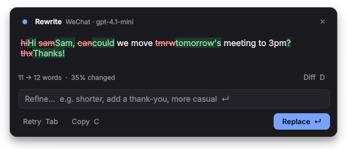
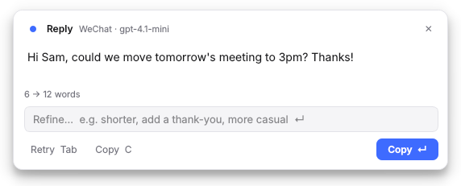

hey can u make this sound better, its for my boss
That headline is selected text. Click a button, or press 1–6.
Select text in any Windows app, pick a tone, and Quillbar rewrites it right where it is. One thin bar, your own AI key, and the result goes back into the exact window you were typing in.
Three ways to call it up
Use whichever fits the moment. All of them land the result back in the same chat box or email.
Show the bar
The bar appears next to your cursor. Click a button or press its number.
Skip the bar
Every button can have its own shortcut. Press it and the text is rewritten instantly.
Mouse mode
Drag across text or double-click a word and the bar pops up. Nothing is copied until you click.
See the change before it lands
For anything important, open the preview. The answer streams in, every changed word is marked, and you can ask for another pass in plain words: "shorter", "add a thank-you", "less stiff".
Enter replace Tab retry C copy D diff Esc close


Reply, summarize, explain
Select a message someone sent you and press Reply for a draft in the same language and tone. Summarize long email threads, pull out action items, or get a plain explanation of a message in another language.
Built for the way you write
- Your own buttonsWrite the instruction, give it a shortcut, choose replace, preview or copy.
- Rules per appKeep WeChat casual and short, keep Outlook's greeting and sign-off.
- Your styleOne note added to every request, like "British spelling, sign emails as Sam".
- Two-way translateEnglish and Chinese, or any pair. It works out the direction itself.
- Smart selectNothing selected in a chat app? It uses the whole message box.
- A model per buttonA fast, cheap model for fixing typos and a stronger one for replies.
- MaskingOptionally swaps emails, phone and card numbers for placeholders before sending.
- Clipboard left aloneWhatever you had copied is put back after every replace.
- HistoryThis session's rewrites, kept in memory only and cleared when you quit.
- Starts with WindowsSits in the tray using next to no memory or CPU.
Bring your own AI
Quillbar talks to any OpenAI-compatible service. Paste a key, press Test, done. Your key is encrypted with your Windows account and only ever sent to the provider you chose.
- OpenAI
- DeepSeek
- Qwen
- Kimi
- Gemini
- Claude
- OpenRouter
- Groq
- DMXAPI
- Ollama
- LM Studio
Ollama and LM Studio run on your own PC, so nothing leaves it at all.
Install in two minutes
Download
Get
Quillbar.exefrom Releases and run it. If Windows SmartScreen warns you, choose More info, then Run anyway.Add your key
Settings opens by itself. Pick a provider, paste your API key, press Fetch models, choose one and press Test.
Select and rewrite
Select text anywhere and press
Ctrl+Alt+Space. Quillbar lives in the tray from now on.
Prefer Python? Download quillbar.py and Start-Quillbar.bat into one folder and double-click the .bat.